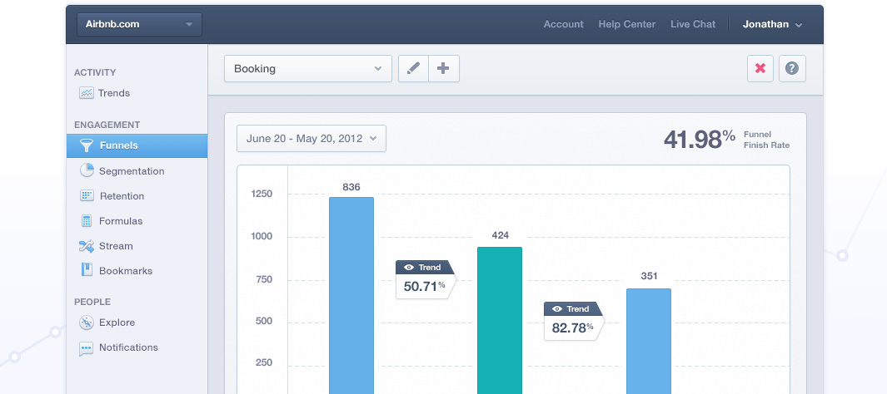

See where you
lose customers with funnels.
Increase conversions by identifying where you lose customers in any process, and run experiments to fix issues that you discover.

It's a funnel, not
rocket science.
Funnels are a way to visually measure how customers move through any series of events. So creating a funnel in Mixpanel is as simple as choosing an event.
Other analytics tools ask you to set variables or rules, use fancy syntax, or fill in complicated forms. Just tell Mixpanel each event you want to track and you're done.
For example, using funnels Airbnb can ask “How many users that arrive from an ad, end up searching for and booking a hotel room in Costa Rica?”
Answer questions about the past with retroactive funnels.
Funnels never need to be defined ahead of time, so you have the flexibility to measure different flows as soon as you think of them. Simply select any number of events and instantly create a report that uses all of your historical data. Even better, clicking between funnel steps will display the history between any two steps. This is a shortcut to see if progress is being made between steps over time.
Get into the nitty-gritty
The visual simplicity of funnels belies their true power: the ability to drill-down even further. Say Airbnb has a funnel report that shows: users that arrive on their site, search for a room, then book one.
Airbnb can answer more questions by refining this report further using “properties” to show greater detail, such as what percentage of bookings are at hotels three stars or better.
Getting started takes less than 10 minutes.
Mixpanel has a simple SDK you can install on every major platform including mobile. Even if you get stuck, our smart and fast support team can help at no extra cost.
Try it for free